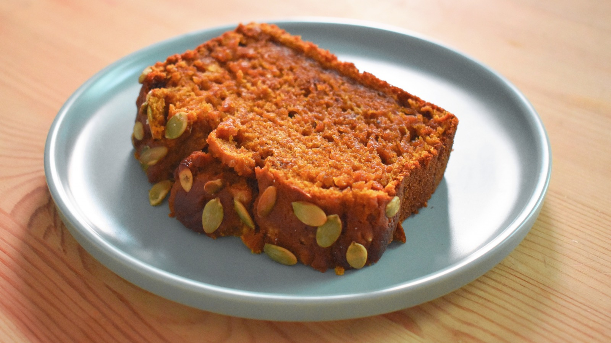

Starbucks Pumpkin Bread

Ingredients
- 1 ½ cups all-purpose flour
- 1 teaspoon baking soda
- 1 teaspoon ground nutmeg
- 1 teaspoon ground cinnamon
- 1 teaspoon ground cloves
- ½ teaspoon baking powder
- ½ teaspoon salt
- 4 eggs
- 1 cup white sugar
- ¼ cup light brown sugar
- ½ teaspoon vanilla extract
- ¾ cup canned pumpkin
- ¾ cup vegetable oil
Directions
- Preheat oven to 350 degrees F (175 degrees C). Grease a 8-1/2x4-1/2-inch loaf pan.
- Combine flour, baking soda, nutmeg, cinnamon, cloves, baking powder, and salt together in a large bowl.
- Beat eggs, white sugar, brown sugar, and vanilla extract in a large bowl with an electric mixer on high speed until combined, about 30 seconds. Beat in pumpkin and oil. Add flour mixture; mix until batter is blended and smooth.
- Pour batter into the prepared loaf pan.
- Bake in the preheated oven until the top is dark brown and a toothpick inserted into the center of the bread comes out clean, about 70 minutes. Let cool in the pan, about 30 minutes. Invert onto a wire rack and slice it into 1-inch thick slices.